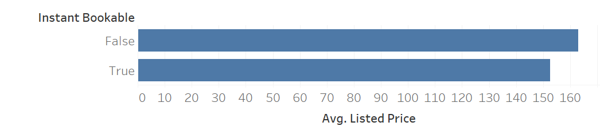
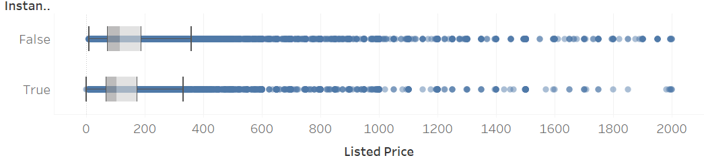

df <- read.csv('../shared/data/airbnb_chicago.csv')Homework 7: t-Tests and Wilcoxon Tests
1 HOMEWORK 7: t-Tests and Wilcoxon Tests
NoteObjectives
- Complete step 4 of the hypothesis testing process: What is the statistical interpretation of the test result?
- Complete step 5 of the hypothesis testing process: What is the practical interpretation of this analysis for a business audience?
- Run t-tests and Wilcoxon tests in R and complete steps 1–5.
NoteResources
.csvfiles included with this project or your group’s clean data set- Week 6 & 7 resources and lectures
- Your lecture examples for
idt(),idw(),pst(),psw(), andost()
ImportantInstructions
- Load the dataset into R as
df
- Review the full example in Hypothesis 1.
- Complete steps 4–5 for Hypothesis 2.
- Attempt your own full test for Hypothesis 3 using one of the following:
idt(),idw(),pst(),psw(), orost(). - For step 5, include both the practical meaning of the result and whether the effect size suggests the result is small, medium, or large.
- If your code will not knit, leave your attempted code in the chunk and comment out lines with
#.
1.1 Hypothesis 1 - Full Example
- What statistical story am I attempting to tell?
Properties that are instantly bookable will have a lower mean price than those that are not.
- What have I estimated or plotted to go along with that story and what is my conclusion from those estimates alone? If there was no uncertainty in these estimates, what should the business do?

Properties that are instantly bookable appear to have a lower mean price than those that are not.
- Which test is appropriate and what is the null hypothesis?
Test Type: Independent Samples t-Test idt()
\(H_0\): \(\mu_{\text{Instant Bookable}} = \mu_{\text{Not Instant Bookable}}\)
\(H_A\): \(\mu_{\text{Instant Bookable}} \neq \mu_{\text{Not Instant Bookable}}\)
\(\alpha = 0.05\)
h1 <- df %>%
idt(listed_price ~ instant_bookable)[1] "Independent variable converted to a factor using as.factor()"print(h1)$analysis_type
[1] "Independent t-Test, Two Tailed test"
$results
[1] "t(2110.38) = 3.515, p < .001, d = 0.123, bf10 = 12.163"
$descriptive_statistics
Group N Mean Standard_Error
1 f 2660.00 137.00 2.47
2 t 1060.00 122.00 3.59- Statistical Interpretation
t(2110.38) = 3.515, p < .001, d = 0.123, bf10 = 12.163
p is less than 0.05 so we reject the null hypothesis. Properties that are instantly bookable have a statistically significant difference in mean listed price compared to those that are not instantly bookable.
- Practical Interpretation
There is evidence that instantly bookable properties are priced differently from properties that are not instantly bookable. In this sample, instantly bookable properties have a lower average listed price. One possible explanation is that owners may use instant booking to attract more customers when their property is in a more competitive market or lower-demand area.
Cohen’s \(d\) is small, which suggests that booking policy explains only a small portion of the overall variation in listed price. Bayes factor indicates strong evidence that this difference is real, but the effect size suggests that booking policy alone is not one of the most important drivers of price. In business terms, instant booking may matter, but owners would still need to consider other larger influences such as location, property size, and amenities.
1.2 Hypothesis 2 - Interpret Steps 4–5
- Statistical Story
Properties that are instantly bookable will have a lower median price than those that are not.
- Estimates / Plot

Properties that are instantly bookable appear to have a lower median listed price than those that are not. The distribution of listed price is highly skewed, so the median may describe the center better than the mean.
- Test and Hypothesis
Test Type: Wilcoxon Rank-Sum Test (Independent Samples) idw()
\(H_0\): \(\text{Median}_{\text{Instant Bookable}} = \text{Median}_{\text{Not Instant Bookable}}\)
\(H_A\): \(\text{Median}_{\text{Instant Bookable}} \neq \text{Median}_{\text{Not Instant Bookable}}\)
\(\alpha = 0.05\)
h2 <- df %>%
idw(listed_price ~ instant_bookable)[1] "Independent variable converted to a factor using as.factor()"print(h2)$analysis_type
[1] "Wilcoxon Rank-Sum Test (Independent Samples), Two Tailed test"
$results
[1] "W = 1590257, p < .001, r_rb = 0.129, bf10 ≈ 12.163"
$descriptive_statistics
Group N Median
1 f 2660 100
2 t 1060 88- Statistical Interpretation
W = 1590257, p < .001, r_rb = 0.129, bf10 ≈ 12.163
Statistical Interpretation:
- Practical Interpretation
Practical Interpretation:
Hint: Compare this result to Hypothesis 1. Do the t-test and Wilcoxon test tell a similar story? Does the effect size suggest a small, medium, or large difference?
1.3 Hypothesis 3 - Your Full Test
- What statistical story am I attempting to tell?
Hypothesis:
- What have I estimated or plotted?
You may leave this blank or include a plot.
- Which test is appropriate and what is the null hypothesis?
Test Type:
\(H_0\):
\(H_A\):
\(\alpha = 0.05\)
# Attempt a test using idt(), idw(), pst(), psw(), or ost()
# If your code does not run, leave your attempted code here and comment out the lines with #
ff <- read.csv('../shared/data/airbnb_chicago.csv')
# h3 <- ff %>%
# idt(listed_price ~ instant_bookable)
# print(h3)- Statistical Interpretation
Statistical Interpretation:
- Practical Interpretation
Practical Interpretation:
Hint: Your practical interpretation should explain the result for a general business audience. Include the effect size and Bayes factor if they help support your conclusion.